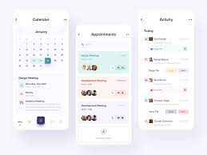
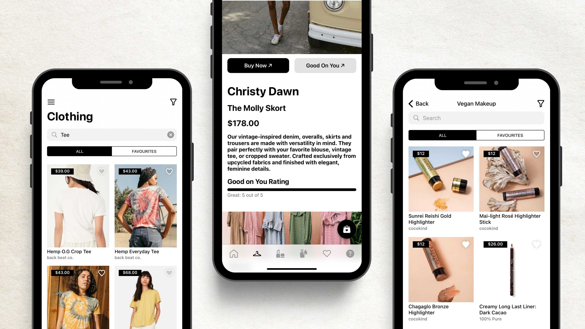
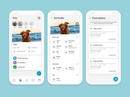

Check Out My Best Projects
UXapphire: The Recipe Generator App
Challenge Statement
UXapphire: The Recipe Generator App was designed to simplify meal planning by suggesting recipes based on available ingredients, catering to busy individuals, culinary enthusiasts, and those with dietary restrictions. The app tackles common issues like ingredient waste, time constraints, and the lack of tailored recipe suggestions. As a designer and developer, the challenges included creating an intuitive and visually appealing interface, managing dynamic ingredient inputs, integrating a robust recipe database, and ensuring a seamless user journey.
Canteen App

Role: Designer
Description: A smart canteen app streamlining food ordering, payments, and management for a hassle-free dining experience.
Daily Planner App
Role: Designer
Description: Stay organized and productive with a daily planner app that helps you manage tasks, appointments, and goals effortlessly.
Fashion Closet App
Role: Designer
Description: Effortlessly organize, style, and track your wardrobe with a fashion closet app that brings your outfits to life.
Online Vet App
Role: Designer
Description: An online vet app offering convenient consultations, health tracking, and expert advice for your pets, anytime, anywhere